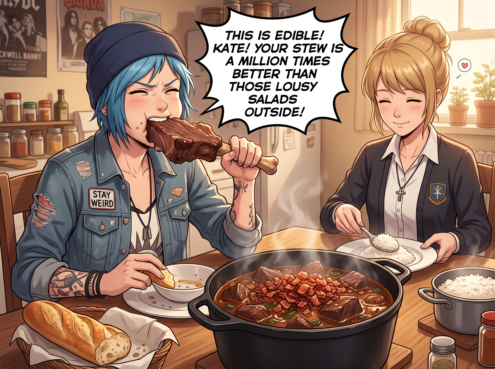
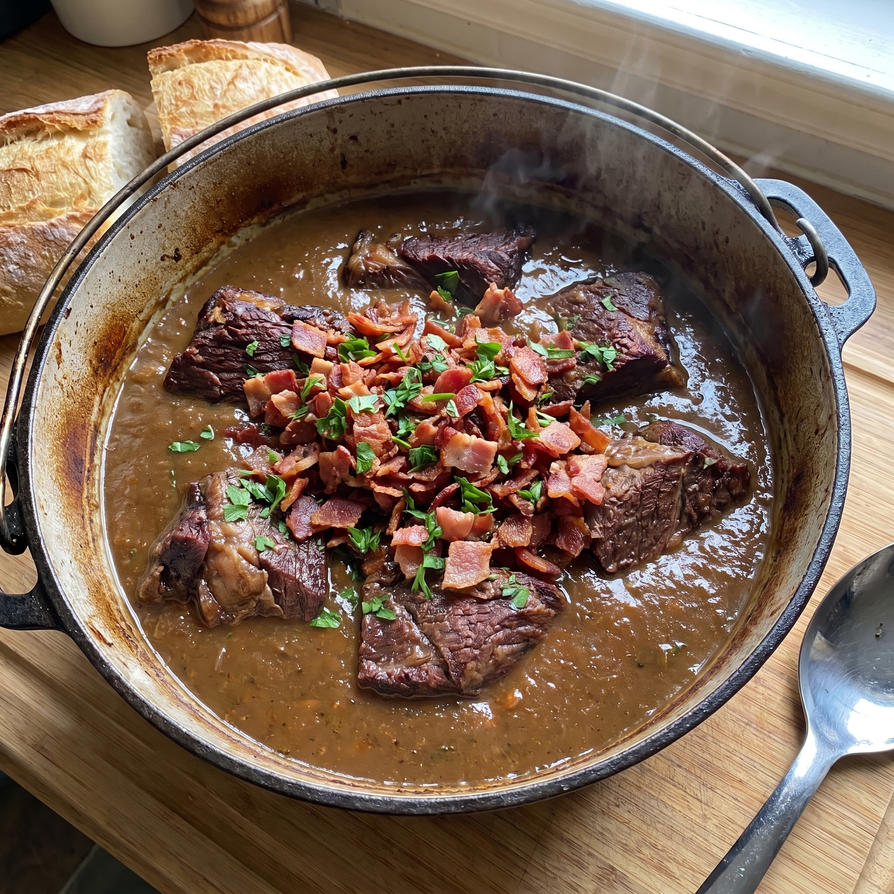
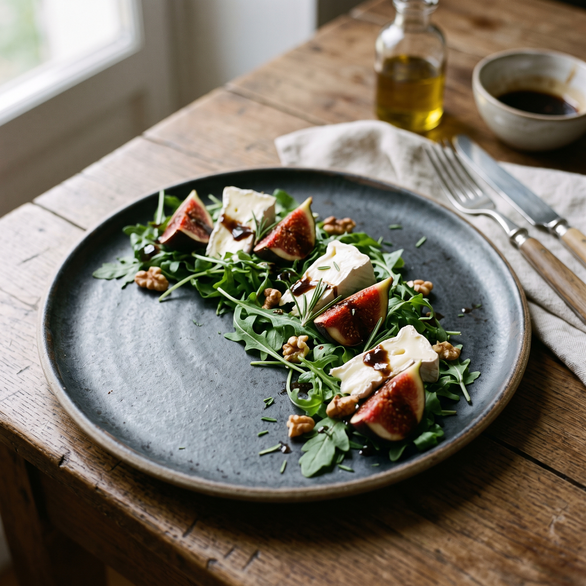
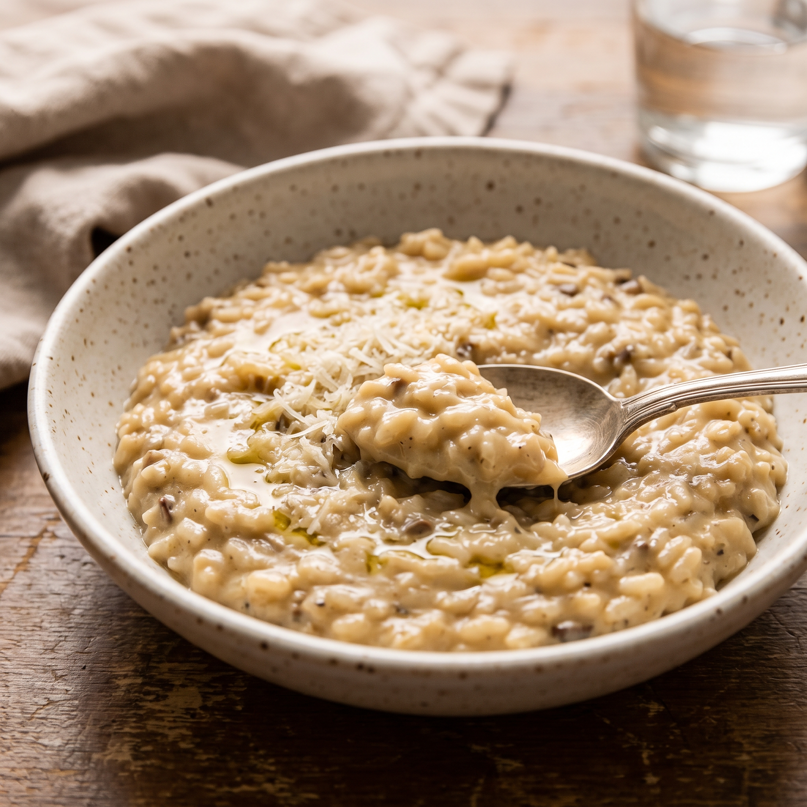

特洛伊木馬料理




自從波特蘭時期爆發過那場著名的清水西藍花叛亂——Victoria 拒絕承認那是人類食物、Chloe 怒吼自己不是吃草的阿卡迪亞羊、Max 被酸澀的小番茄酸到五官扭曲——Kate 深刻地意識到，對付這三個階級、口味與作息完全脫軌的傢伙，純粹的苦行僧式健康飲食是絕對行不通的。
搬到華盛頓州的新基地後，掌握著中島廚房與懸崖溫室絕對控制權的 Kate，完成了一場堪稱大師級的烹飪戰術升級。小天使收起了清水和生菜，換上了一套名為特洛伊木馬式健康料理的腹黑溫柔戰法。
一、對付 Chloe：重工業偽裝下的肉食狂歡
要讓每天消耗巨大體力的藍領技師吃蔬菜，唯一的辦法就是把它們物理消滅在厚重的肉汁裡。
Kate 不再逼 Chloe 吃水煮菜，而是端出一整鍋用鑄鐵鍋慢燉了四個小時的牛腩。肉塊巨大，湯汁濃郁，表面還撒著現烤的脆皮培根碎。那鍋濃郁粘稠、讓 Chloe 拿著法棍麵包蘸得乾乾淨淨的神仙肉汁，其實是 Kate 用攪拌機把胡蘿蔔、西芹、洋蔥和羽衣甘藍完全打成泥後熬製出來的。
Chloe 一邊大口嚼肉一邊狂讚：「這才是人吃的飯！Kate！妳的燉肉比外面那些破沙拉強一萬倍！」而 Kate 只是在一旁笑瞇瞇地給她添飯，深藏功與名。
二、對付 Victoria：用高定美學擊破名媛防線
Victoria 的痛點不在於蔬菜本身，而在於平民感與粗糙感。無醬汁的生菜讓她覺得自己像在吃監獄配餐。
Kate 徹底放棄了美式大盆沙拉。她採摘了溫室裡最嫩的芝麻菜，配上 Victoria 從湯森港買回來的高級布里乾酪和冷榨胡桃油。她用新鮮無花果、義大利黑醋和自己種的迷迭香，熬製了一款色澤深邃、酸甜平衡的秘製油醋汁，並將沙拉擺成了法國私廚那種留白極多的藝術形狀。
Victoria 看著面前宛如藝術品的餐盤，優雅地拿起刀叉切了一小塊起司配著蔬菜放進嘴裡。黑醋的醇厚與香草的芬芳瞬間征服了她的味蕾：「Marsh，妳終於學會了什麼叫對食材的基本尊重。這道前菜勉強達到了西雅圖二星餐廳的門檻。」
三、對付 Max：消除突發酸澀，主攻溫和碳水
Max 吃飯容易走神，而且對爆汁的小番茄或突然的酸味有著本能的抗拒。
為了照顧 Max 脆弱的味覺和長時間盯著暗房的疲憊，Kate 為她量身定制了絕對溫和、無需咀嚼硬物、且熱量充足的安慰食物。把所有可能帶來驚嚇的食材全部剔除。飯裡融化了 Victoria 贊助的高級帕瑪森起司，每一口都是溫和濃郁的奶香與菌菇香氣。
Max 一手拿著剛洗出來的底片對著燈光看，另一隻手拿著勺子盲舀燉飯放進嘴裡，全程沒有吃到任何奇怪的顆粒，發出了極度舒適的咀嚼聲：「Kate……妳就是二號車廂的專屬食神……」
四、新基地長桌前的晚餐大和諧
窗外是普吉特海灣呼嘯的海風，二號車廂的壁爐火光映照在實木長桌上。
曾經因為一盤清水西藍花而差點引發內戰的三個人，此刻正無比和諧地低頭乾飯：Chloe 狂野地撕咬著燉肉，Victoria 優雅地品嚐著高定沙拉，Max 像隻倉鼠一樣安靜地吃著奶油燉飯。
Kate 解下那條印著小碎花的圍裙，在長桌的末端坐下。她雙手捧著自己那杯溫熱的迷迭香花茶，看著眼前這三個被她的特洛伊木馬料理治得服服帖帖、甚至還在為了最後一塊烤麵包互相瞪眼的傢伙。
長髮天使的嘴角勾起了一抹極其溫柔、卻又帶著一絲勝利者腹黑的微笑：「大家慢點吃哦，鍋裡還有很多呢。對了 Chloe，妳剛才吃掉的那一大勺肉汁裡，可是有整整半顆妳最討厭的西蘭花泥呢～」
「噗——咳咳咳咳咳！！！」
Chloe 手裡的法棍直接掉在了盤子裡，Victoria 驚愕地停下了刀叉，Max 默默地把碗往自己懷裡護了護。而在這片短暫的寂靜後，二號車廂再次爆發出了雞飛狗跳的歡樂喧鬧聲。